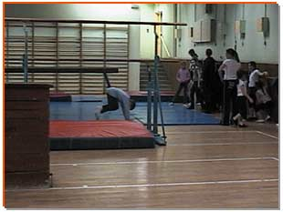
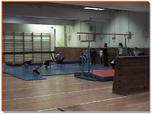
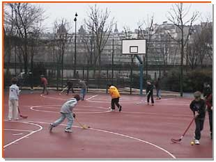
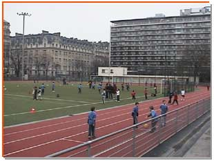
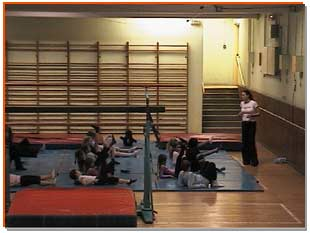
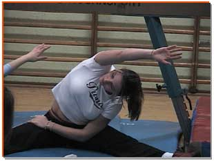
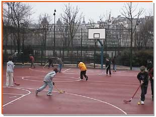
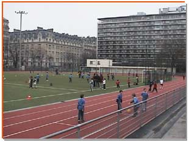
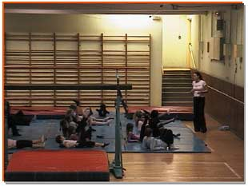
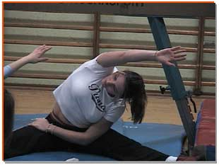

Actualité
Athlétisme / Multisports : Suite à la réquisition du stade par la Mairie de Paris, les activités au Stade sont suspendues. Gymnastique : Le dernier cours aura lieu le mercredi 3 juillet Natation : le dernier cours aura lieu le vendredi 5 juillet Rentrée 2019 : la reprise des cours aura lieu le mardi 10 septembre 2019 Les anciens adhérents se présentent directement à l’accueil du stade ou de la piscine avec leur carte rose 2018. Les inscriptions des nouveaux adhérents se fait à l’accueil du stade ou de la piscine aux jours et heures des activités sportives. Une séance d’essai gratuite est proposée à tous les enfants intéressés. (mettre le lien avec l’onglet Activités proposées)
L'histoire des Elfes

Association dite « LES ELFES » A été créée par Madame Andrée JOLY , en 1928 à Paris, Elle a été déclarée à la Préfecture de Paris, sous le N° 1660 29 en mars 1928. Sa déclaration au journal officiel a été faite le 26 novembre 1945. Elle a été agréée par le Ministère de la Jeunesse et des sports sous le N° 11 774 le 25 septembre 1951. Elle a été reconnue d'utilité publique par le décret du 14 décembre 1956. Les Elfes est un club de pratique sportive de loisirs pour des enfants de 4 à 18 ans. Les activités proposées sont la natation, la gymnastique et l’athlétisme/le multisports.
Galerie de photos
 







Les Elfes en un coup d'oeil
Athlétisme/multisports
STADE : Centre Emile Anthoine
9, rue Jean Rey - 75015 Paris
Métro : Bir - Hakeim
Le mercredi de 14 H30 à 16 H 30
-S'inscrire-
-Se réinscrire-
{kind=link}
Gymnastique au sol – Agrès
GYMNASE : Emile Anthoine
9, rue Jean Rey - 75015 Paris
Métro : Bir - Hakeim
Le mercredi de 14 H 30 à 16 H 30
Natation
PISCINE : Armand Massard,
17, rue de l’Arrivée, 75015 Paris.
M° Montparnasse-Bienvenue,
Le mardi de 17h30 à 19h,
Le vendredi de 17h30 à 19h,
Les tarifs
| Tableau des activités | 1 enfant | 2 enfants | 3 enfants |
|---|---|---|---|
| Athlétisme/Multisports de 4 à 13 ans | 300 € | 540 € | 770 € |
| Gymnastique au sol – Agrès 2 heures A partir de 8 ans |
355 € | 640 € | 915 € |
| Natation De 4 à 18 ans – 1 séance par semaine |
300 € | 540 € | 770 € |
Ces tarifs tiennent compte d'un droit d'adhésion annuel par enfant de 25 €
La FAQ
- A quel âge peut on adhérer au club des Elfes ?
A partir de 4ans jusqu'à 18 ans - A la piscine, les parents peuvent-ils se rendre avec les enfants sur les bassins ?
Le règlement de la Piscine n'autorise pas la présence d'adultes pendant les cours. - Les parents réclament que la température de l'eau soit plus élévée (surtout chez les petits), est ce que c'est possible ?
Cette requête (bien fondée) est à présenter à la direction de la piscine et à la Ville de Paris. - Est il prévu des compétitions avec le club des Elfes?
Le club ne recherche pas la participation aux compétitions officielles. Cependant il est prévu au sein du club, une émulation dans chaque section sur le conseil d'un M.N.S. Des tests de performances sont organisés à la fin de chaque année. - Sur le stade y'a t il une tenue réglementaire ?
Oui. Short ou survêtement selon la saison, bonnes chaussures de sport, en hiver bonnets et gants sont conseillés, les jour de pluie, ne pas quitter son vêtement de pluie ... TENUE DE VILLE REFUSEE - En salle de gym quelle est la tenue recommandée ?
Il s'agit d'un cours en salle, il est conseillé de porter un justaucorps ou collant avec un tee shirt léger, on peut être pieds nus ou en petites sandales. - Où faut il s'adresser pour avoir des renseignements ?
Par téléphone : 06 22 64 88 79 – 06 24 78 11 87
Par mail : club.les.elfes@free.fr
Contacts
Les Elfes, Association Sportive Loi 1901,
Reconnue d’Utilité Publique,
agréée de la Jeunesse et des Sports,
35, rue Falguière – 75015 Paris,
06 22 64 88 79 – 06 24 78 11 87 ;
club.les.elfes@free.fr